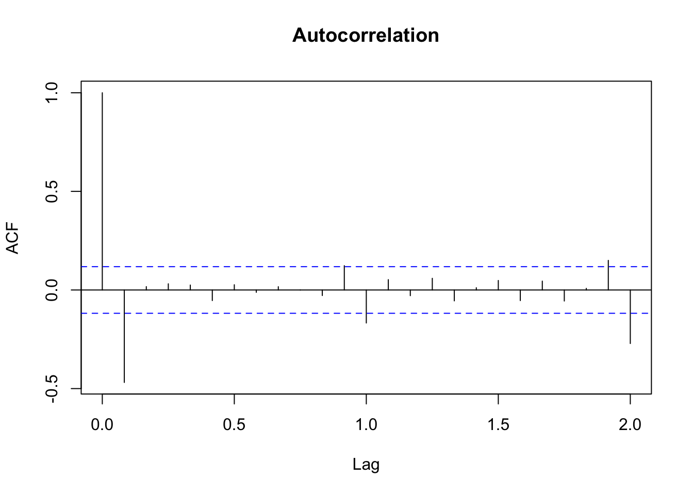
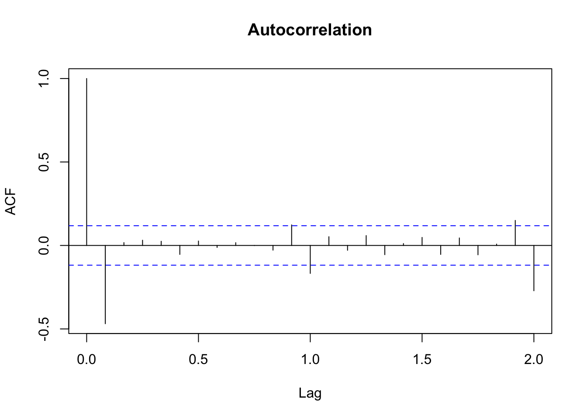
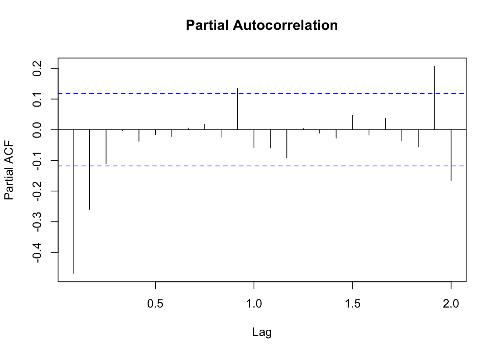

data = readRDS("data/md.Rds")
acf(data$Export, main='Autocorrelation')
A time series is notationally represented by \(\{\dots, y_{t-1}, y_t, y_{t+1}, y_{t+2}, \dots\}\) , which is a sequence of random variables. We think of each variable at a time point \(t\) as a random variable, whose realized value is drawn from some distribution.
A distinguishing feature of this sequence is temporal dependence. That is, the distribution of \(y_t\) conditional on previous value of the series depends on the outcome of those previous observations. It is of particular interest how observations are correlated across time. A big part of the time series analysis is to exploit this correlation.
The temporal dependence is characterized by the correlation between \(y_t\) and its own lags \(y_{t-k}\).
Definition 3.1 The \(k\)-th order autocovariance of \(y_t\) is defined as
\[\gamma_k = \text{cov}(y_t, y_{t-k}).\]
The \(k\)-th order autocorrelation is defined as
\[\rho_k = \frac{\text{cov}(y_t, y_{t-k})}{\text{var}(y_t)} = \frac{\gamma_k}{\gamma_0}.\]
If we plot the autocorrelation as a function of the lag length \(k\), we get the autocorrelation function (ACF). Here is an example of the ACF of China’s monthly export growth (log-difference). The lag on the horizontal axis is counted by seasonal period. Because it is monthly data, 1 period is 12 months. We can see the autocorrelation is the strongest for the first two lags. Longer lags are barely significant. There are spikes with 12-month and 24-month lags, indicating the seasonality is not fully removed from the series.
data = readRDS("data/md.Rds")
acf(data$Export, main='Autocorrelation')
ACF measures the correlation between \(y_t\) and \(y_{t-k}\) regardless of their relationships with the intermediate variables \(y_{t-1},y_{t-2},\dots,y_{t-k+1}\). Even if \(y_t\) is only correlated with the first-order lag, it is automatically made correlated with the \(k\)-th order lag through intermediate variables. Sometime we are interested in the correlation between \(y_t\) and \(y_{t-k}\) partialling out the influence of intermediate variables.
Definition 3.2 The partial autocorrelation function (PACF) considers the correlation between the remaining parts in \(y_t\) and \(y_{t-k}\) after partialling out the intermediate effect of \(y_{t-1},y_{t-2},\dots,y_{t-k+1}\).
\[ \phi_k = \begin{cases} \text{corr}(y_t, y_{t-1})=\rho_{_1}, \text{ if } k=1;\\ \text{corr}(r_{y_t|y_{t-1},\dots,y_{t-k+1}}, r_{y_{t-k}|y_{t-1},\dots,y_{t-k+1}}), \text{ if } k\geq 2; \end{cases} \]
where \(r_{y|x}\) means the remainder in \(y\) after partialling out the intermediate effect of \(x\).
In practice, \(\phi_k\) can be estimated by the regression
\[ y_t = \mu + \phi_1 y_{t-1} + \phi_2 y_{t-2} + \dots + \phi_k y_{t-k} + \epsilon_t. \]
The estimated coefficient \(\hat\phi_k\) is the partial autocorrelation after controlling the intermediate lags.
pacf(data$Export, main='Partial Autocorrelation')